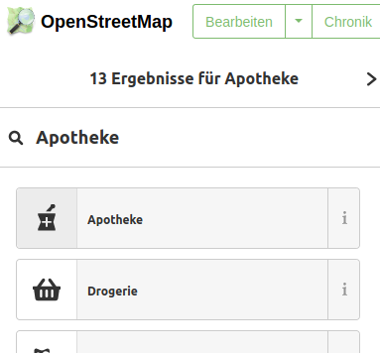
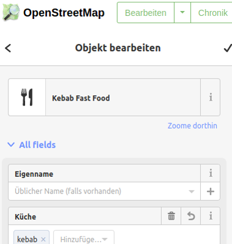
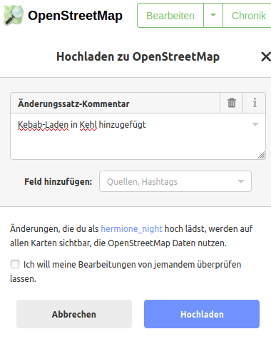

Euer Bäcker oder die Apotheke um die Ecke sind nicht auf CA RESTE OUVERT? Keine Grund zur Sorge! Es ist nicht schwer unsere gemeinsame Karte, die die trotz Covid19-Lockdown noch geöffneten Geschäfte anzeigt, zu verbessern. Wir haben eine kleine Anleitung vorbereitet.
CA REST OUVERT verwendet Daten von OpenStreetMap (OSM). OSM ist die Wikipedia der Kartographie: eine weltweite Karte, die ihr mit eurem lokalen Wissen anreichern könnt. Und genau das werden wir machen: wir werden die OSM Datenbank mit den fehlenden Geschäften anreichern und somit die OSM-Karte verbessern.

Bevor wir loslegen können, benötigen wir einen Account bei OpenStreetMap
Dieser Schritt ist notwendig, wenn man der OSM Community beitreten möchte, um die Karte bearbeiten möchte oder um mit anderen lokalen Community-Mitgliedern in Kontakt zu treten.
Auf OpenStreetMap.org könnt ihr auf die gleiche Art und Weise euer Viertel entdecken, wie auf CA RESTE OUVERT oder anderen Karten im Internet. Zoomt an die Stelle, wo ihr ein Geschäft hinzufügen möchtet und klickt auf den Bearbeiten-Button oben links.

Beim ersten Mal erklärt euch eine kleine Anleitung die wichtigsten Schritte, wie man etwas zu OpenStreetMap hinzufügt. Wir raten euch, diese Anleitung bis zu Ende durchzulesen, um euch mit dem Editieren von OpenStreetMap vertraut zu machen. Für unseren Zweck müssen wir nur fehlende Punkte hinzufügen.

Um ein fehlendes Geschäft anzulegen, schiebt ihr die Karte an die Stelle, wo sich das Geschäft befindet und klickt zuerst auf den Button "Punkt" und anschliessend an die Stelle auf der Karte, wo das Geschäft hin soll. Hierdurch wird ein Punkt an der Stelle angelegt. Und nun könnt ihr mit Hilfe des Suchfeldes den Typ des Geschäfts auswählen, um den es sich handelt.

Tipp: Wenn es sich um ein Geschäft einer Kette oder einer Marke handelt, könnt ihr auch nach dem Markennamen im Suchfeld suchen (Beispiel "Edeka" oder "Aldi").
Nun könnt ihr das Formular noch um weitere, nützliche Informationen ergänzen, wie zum Beispiel Name oder Telefonnummer. Ihr seid nicht gezwungen das Formular vollständig auszufüllen. Wenn ihr euch nicht mehr an den Namen des Restaurants erinnert, ist das nicht schlimm!

Sobald ihr alles fertig habt, müsst ihr die Änderungen noch nur speichern. Hierzu klickt ihr auf den Speichern-Butten rechts oben auf der Seite. Ihr werdet jetzt nach einem kleinen Beschreibung gefragt, was ihr auf der Karte geändert habt. Nachdem ihr diese eingegeben habt, klickt ihr auf "Hochladen".

Glückwunsch zu diesem ersten Beitrag und herzlich willkommen in der OpenStreetMap-Community! Ihr müsst euch jetzt nur noch etwas gedulden. Die neuen Geschäfte werden regelmäßig automatisch zu CA RESTE OUVERT hinzugefügt. Sie können nun hier anschliessend alle Informationen hinzufügen, die den Covid19-Lockdown betreffen.
Bevor ihr ein fehlendes Geschäft hinzufügt, schaut genau hin, ob es nicht vielleicht doch schon existiert. Es kann vielleicht schon da sein, aber den falschen Typ haben.
OpenStreetMap ist eine öffentliche Karte. Schreibt keine privaten Daten von euch oder von den Läden, die ihr hinzufügt, hinzu.
Kopiert nicht von anderen Karten. Sie sind in der Regel lizenzrechtlich geschützt.
Falls ihr auf Schwierigkeiten stösst oder Fragen habt, zögert nicht ins Forum der deutschsprachigen OpenStreetMap hineinzuschauen. Die Leute aus der Community sind überaus hilfsbereit.
Wir zählen auf euch und auf eure Kenntnis eures Viertels. Gemeinsam machen wir die beste Karte der Welt und tun so etwas gegen die anhaltende Covid19-Krise.